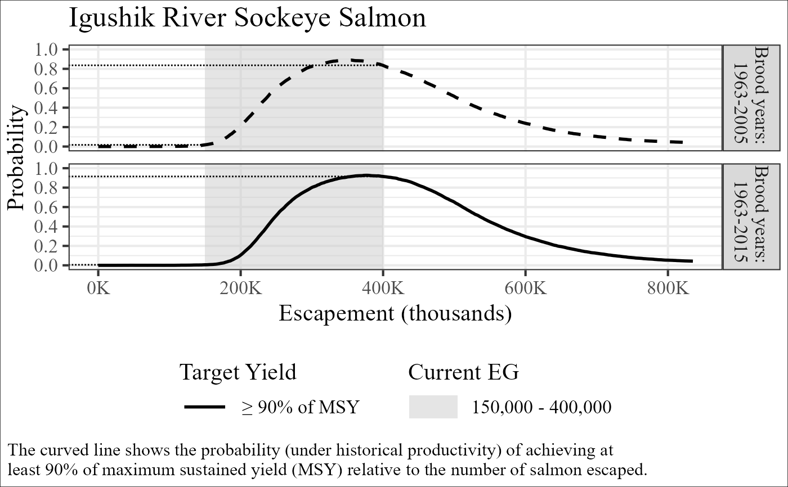

Produces OYP plot(s) for the stock. Depending on the profile_list provided, the output will be either a single OYP from the updated analysis, or two OYPs from the original and updated analyses. In either case the OYP(s) can be overlain with a relevant escapement goal range.
plot_profile(
profile_list,
goal_data,
title,
new_finding = FALSE,
limit = NULL,
labelK = FALSE
)A list of the 1 or 2 OYPs to plot. The name of each list object will be used as the facet title and should follow the convention "Brood Year: XXXX-YYYY" for each item. If 2 OYPs are provided the function assumes the first item in the list is the OYP associated with the original escapement goal analysis and the second item in the list is the OYP associated with the updated escapement goal analysis.
A dataframe containing calendar year (yr), the escapement goal
lower bound (lb) and, the escapement goal upper bound (ub). Only needs to
include years where the goal changed. If the updated analysis resulted in a
new escapement goal finding, the new finding should be included in the table
with the year set to the year that the new escapement goal finding will take effect.
Use ub = NA for lower bound SEGs.
A character vector with the plot title. Suggest "X River, Y Salmon".
TRUE / FALSE. Indicates whether a new escapement goal finding resulted from the updated escapement goal analysis. If TRUE, the new escapement goal finding will be shown in brown and associated with the updated analysis while the current escapement goal will be shown in gray and associated with the original analysis. If FALSE, the current escapement goal will be shown in gray and associated with both analyses.
Upper bound of spawners for plot. Default (NULL) will use 2.25 times S.msy.
TRUE / FALSE value for whether plot should display x axis values using a K for thousands (e.g., 350,000 would be 350K). Defaults to FALSE.
A figure
post_Igushik <- c(post_Igushik_byr63_05, post_Igushik_byr63_15)
profile_Igushik <- get_profile(post_Igushik, multiplier = 1e-5)
plot_profile(profile_list = profile_Igushik, goal_data = goal_Igushik,
title = "Igushik River Sockeye Salmon")
#> Warning: Removed 4 rows containing missing values or values outside the scale range
#> (`geom_segment()`).
